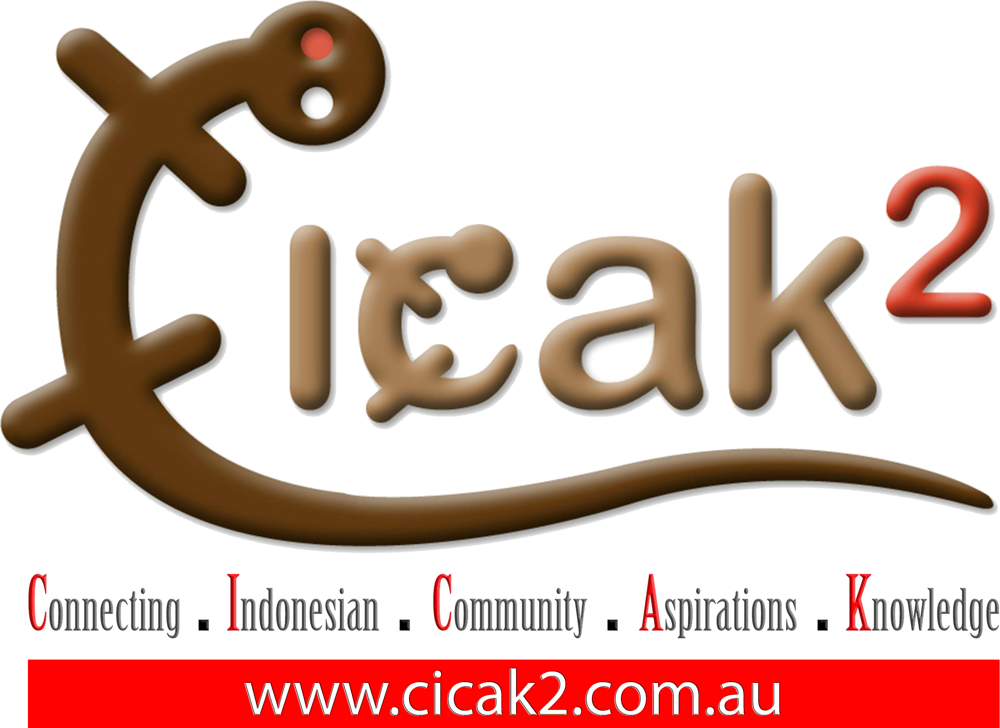
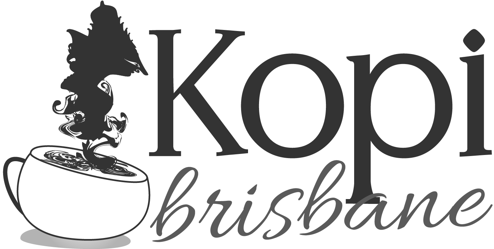

One of Indonesian festivals in Brisbane. This annual event is held by Indonesian Student Association in Queensland (PPIA Queensland), which is very anticipated by Indonesian people in Brisbane. This event is held in order to promote Indonesian culture in Brisbane and for Indonesian people to gather and feels like they are home.
Pesta Rakyat 2015: Djakarta Tempo Doeloe, will be held at Boundary St Market, West End. The event will start at 12PM-8PM.
The City Glider Bus stops right at the markets on Mollison Street. You can catch 196/199/60.
South Bank Ferry Stop is a short walk away.
South Bank Train Station is a short walk away.
Ride your bike, walk, run, skateboard, catch a cab or use your segway!
Just visit this page if you need more information :)
Click Here
PPIA Queensland 2015
Experience the Indonesian culture in one day with the atmosphere of Old Batavia
Comedy drama about hero of old batavia era.
Be a masterchef finalist for a day and you get to experience mystery box challenge.
Witness the exotic clothing of Indonesia worn by beautiful models.
The dance of thousand hands originally from Aceh performed by Zamania Saman Dancer Brisbane.
Enjoying a beautiful melody from Javanese musical instrument made from bamboo.
Experiencing the authentic unique rhythm for Indonesia that is enjoyable for all ages and classes.
Fun games and many other performances, the most important thing… Pesta Rakyat 2015 is free!
You get to experience the exotic Indonesian foods, drinks, and traditional games. Below are the stalls that opened at Pesta Rakyat 2015 :
Pesta Rakyat 2015 Sponsored by :
Our Media Partners are :
 QUT Student Engagement
Feel free to contact us regarding further information and details about Pesta Rakyat 2015